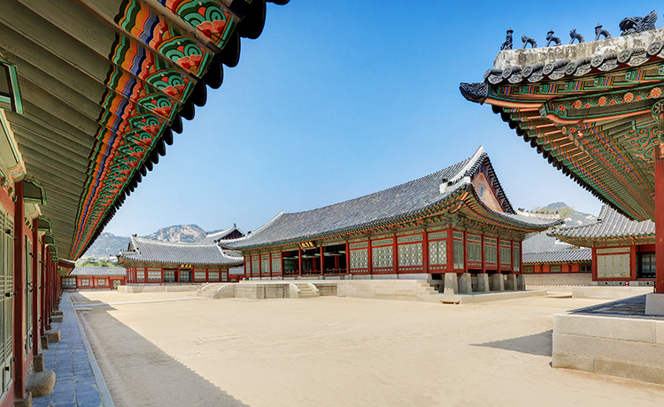

+ 관람안내
1. 이용요금(일반권)
- - 내국인
- 대인(만25세~만64세) : 3,000원
- 대인(10인이상) : 2,400원
- - 외국인
- 대인(만19세~만64세) : 3,000원(10인이상 2,400원)
- 소인(만7세~만18세) : 1,500원(10인이상 1,200원)
2. 관람시간
- 1월 ~ 2월: 09:00~17:00(입장마감은 16:00)
- 3월 ~ 5월: 09:00~18:00(입장마감은 17:00)
- 6월 ~ 8월: 09:00~18:30(입장마감은 17:30)
- 9월 ~ 10월: 09:00~18:00(입장마감은 17:00)
- 11월 ~ 12월: 09:00~17:00(입장마감은 16:00)
- 기관 사정에 따라 관람시간 단축 및 조정이 있을 수 있습니다.
3. 관람 유의사항
※ 관람하시면서 꼭 준수해 주셔야 할 사항입니다.
모두에게 기분좋은 관람이 될 수 있도록 협조하여 주시기 바랍니다.
궁·능 관람 등에 관한 규정(제정 2019.03.29. 문화재청 궁능유적본부 훈령
제7호)
문화재 보존·관리 등을 위하여 다음 각 호 중 어느 하나의 해당하는 자에 대하여
관람중지, 관련 물품 보관 또는 입장제한 등의 필요한 조치를 취할 수 있다.
- 인화물질 및 무기류(총포, 화약, 도검류 등) 등 위험물 소지자
- 음식물 및 도시락 등을 섭취하는 자
- 반려동물과 함께 들어오는 자(다만 장애인복지법 제2조에서 정한 장애인과 함께 들어오는 장애인
보조견은 예외로 한다.
이 경우 ‘장애인 보조견’이라 함은 장애인복지법 제40조 제2항의
‘장애인 보조견 표지’를 붙인 ‘장애인 보조견’을 말한다.)
- 운동·놀이기구, 악기, 확성기 및 다른 사람의 관람 또는 문화재의 보존·관리에 지장을 줄 우려가
있는 물건 소지자
- 음주, 복장, 무속행위, 방언(放言), 사사로운 제사행위, 종교집회, 고성방가, 풍기문란 및 기타
부적절한 행위로 다른 사람의 관람
또는 문화재 보존·관리에 지장을 줄 우려가 있는 자
- 정당한 사유 없이 관람규정이나 직원의 안내에 따르지 않는 자
- 경복궁 경내 전 지역은 금연구역으로 하며, 궁능유적기관의 장은 흡연자에 대해 관람중지, 퇴장 등 필요한 조치를 취할 수 있다.
- 주류, 각종 야영용품(텐트, 돗자리, 그늘막 등) 및 취사도구 소지자